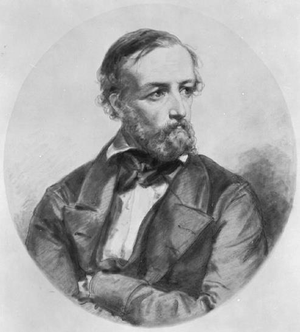
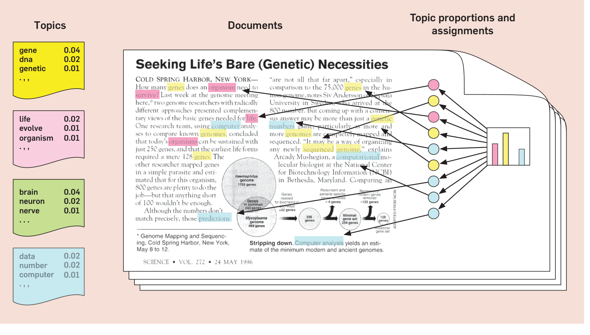
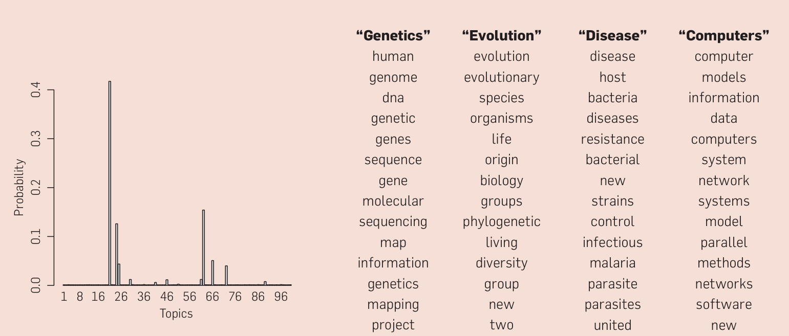
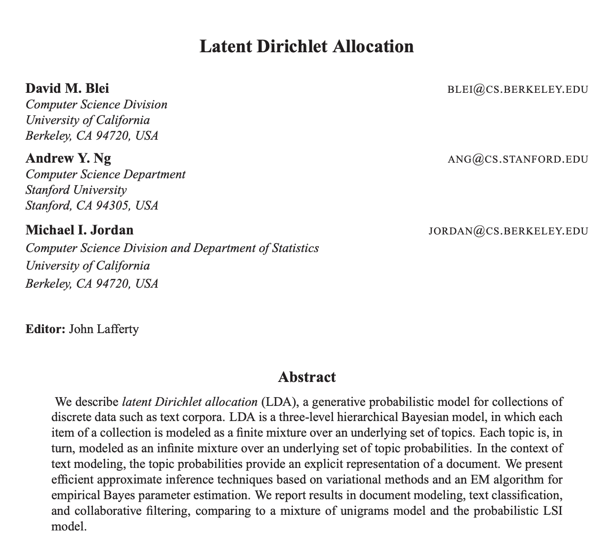
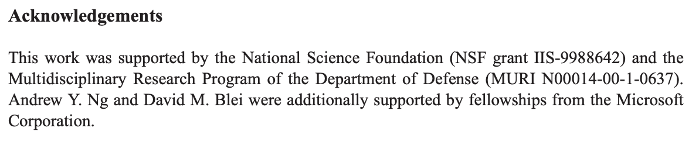

Topic Modeling
主題模型

1805–1859
LDA ＝ 潛在狄利克雷分配
Latent Dirichlet Allocation: who is Dirichlet, and what is “latent”?
DHG 502 Digital Approaches in Historical Research · ← → navigate · 1–9 sections · F fullscreen
什麼是「建模」？What is modeling?
模型：對現實世界的
一種簡化表述a simplified representation of reality
一種簡化表述a simplified representation of reality
建模：用統計方法找出
世界中的規律或結構using statistics to find regularities or structure
世界中的規律或結構using statistics to find regularities or structure
兩者永遠不會完全重合“All models are wrong, but some are useful.” (George Box)
什麼是「主題」？What is a topic?
在文本中經常一起出現的一組詞a group of words that often occur together in texts
之前學過的搭配詞：兩個詞是否互相吸引collocations (Week 4): do two words attract each other?
今天的主題模型：一整群詞，在整批文件裡topic models: whole groups of words, across a whole collection
無監督：機器事先不知道有哪些主題unsupervised: the machine is not told what the topics are
一封信，可以有好幾個主題One document, several topics
王經理09:12
週五會議
週五團隊會議的議程在這裡。Here’s the agenda for our team meeting on Friday.
Work 工作
財務處10:47
計畫費用
計畫的總費用是一百萬。The final cost of the project comes to $1MM.
Work 工作Finance 財務
小李昨天
出差報銷
附件是我出差的報銷收據。I’ve attached the receipt of my travel expenses.
Finance 財務
陳老師昨天
轉寄申請
可以把那份申請轉給行政嗎？Can you forward that request to my admin?
Work 工作
阿美週一
好久不見！
蜜月旅行怎麼樣？How was your honeymoon?
Personal 私人
會計師週一
你要的文件
這是你要的財務文件。Here are the financial docs you asked for.
Finance 財務
文件 ＝ 幾個主題的混合；標籤的名字由我們來取A document is a mixture of topics. The model gets no labels; we name the topics. · example after Serrano.Academy
詞袋模型The bag-of-words model
① 分詞（jieba 等工具）word segmentation
② 去除停用詞：的、很、在、中、為……remove stopwords
③ 只數次數，忘掉順序count the words, forget their order
「狗咬人」＝「人咬狗」＝ {狗, 咬, 人}“Dog bites man” and “man bites dog” are the same bag.
LDA 的直覺The intuition behind LDA

主題 ＝ 詞的機率分布topics: distributions over words
這篇文件的主題比例topic proportions of this document
每一個詞屬於
哪個主題topic assignment of every word
哪個主題topic assignment of every word
所有文件共用主題，
只是比例不同same topics, different proportions
只是比例不同same topics, different proportions
Blei, “Probabilistic Topic Models”, CACM 55.4 (2012), Fig. 1
LDA 怎麼想像「寫作」The generative story
① 選主題比例choose topic proportions
② 每個詞：射飛鏢選主題 → 從主題抽詞each word: throw a dart to choose a topic, then draw a word from it
現實正好相反：只看得到詞，主題是潛在（latent）的 → 要推斷回去We only see the words; the topics are hidden (latent) and must be inferred.
真實的例子：《科學》雜誌17,000 articles from Science, 100 topics

Science vol. 1 (Wikimedia Commons, public domain)
1880 年創刊，出資人是愛迪生founded in 1880 with money from Thomas Edison

Blei 2012, Fig. 2: the article from the previous slide
100 個主題中只用了少數幾個；“Genetics” 等名字是人加的only a handful of topics; the names in quotes were added by people
LDA 學到兩種分布What LDA learns: two distributions
文件 → 主題 \(\theta_d\)document–topic · θd (“theta d”): the topic mix of document d
主題 → 詞語 \(\varphi_k\)topic–word · φk (“phi k”): the word list of topic k
每一行加起來都是 1；主題數 K 由我們決定Every row sums to 1. We choose the number of topics K.
玩具問題：替每個詞上色Colour every word blue, green or red (K = 3)
我們的目標：our goal (the true objective):
① 讓每篇文件盡量單色make each document as monochromatic as possible
② 讓每個詞盡量單色make each word as monochromatic as possible
兩個目標互相矛盾 → 模型最後找到兩者的平衡The goals contradict each other, so the model ends up finding a balance between them.
起點：先隨機上色start: random colours
足球 ball · 行星 planet · 星系 galaxy · 公投 referendum · after Serrano.Academy
吉布斯採樣：一步Gibbs sampling: recolour one word
① 選一個詞：
文件 1 的第一個「足球」pick one word
文件 1 的第一個「足球」pick one word
② 拿掉它的顏色，
數一數remove its colour and count
數一數remove its colour and count
③ 相乘 ＝
長方形面積multiply: the area of a rectangle
長方形面積multiply: the area of a rectangle
問題：乘以 0 → 完全消失
但我們還想留一點機會a zero wipes blue and green out completely, but we still want to give them a small chance
但我們還想留一點機會a zero wipes blue and green out completely, but we still want to give them a small chance
＋α、＋β：
每個顏色都不為零add α and β (here α = β = 0.5): every colour stays possible
每個顏色都不為零add α and β (here α = β = 0.5): every colour stays possible
④ 按面積隨機射飛鏢
→ 紅色機會最大throw a dart at random: red is most likely
→ 紅色機會最大throw a dart at random: red is most likely
反覆抽樣，直到平衡Repeat, word after word, until equilibrium
Perplexity: how “surprised” the model is, lower is better 困惑度：越低越好
now: –
step 0 · sweep 0
α = 0.1 · β = 0.01 ·
α = 0.1 · β = 0.01 ·
N 下一步 next step
A 自動 play / pause
↑ ↓ 速度 speed
R 回到起點 reset
A 自動 play / pause
↑ ↓ 速度 speed
R 回到起點 reset
平衡 ≠ 不動：
整體分布穩定下來colours still flicker, the distribution is stable
整體分布穩定下來colours still flicker, the distribution is stable
什麼是困惑度？What is perplexity?
模型要猜文件裡的每一個詞。困惑度 ＝ 它平均在幾個詞之間猶豫The model guesses each word in a document. Perplexity = how many words it is effectively hesitating between.
完全亂猜random guessing
25%
足球
25%
行星
25%
星系
25%
公投
Perplexity = 4
很有把握a confident guess
85%
足球
5%
行星
5%
星系
5%
公投
Perplexity ≈ 1.8
剛才的玩具：3.7 → 2.4our toy example: 3.7 → 2.4, from almost random guessing to fairly confident
越低越好，但最低的模型
不一定最好懂lower is better, but the lowest is not always the most interpretable (see the word-intrusion test later)
不一定最好懂lower is better, but the lowest is not always the most interpretable (see the word-intrusion test later)
要分成幾群？How many groups? (K-means clustering)
K = 3
↑ ↓ choose K · C cluster · R clear · iteration 0
K = 3 還是 K = 10？都對：拉遠看 vs. 拉近看K = 3 or K = 10? Both are right: zoom out vs. zoom in.
主題數沒有正確答案，
看你的研究問題There is no right number of topics; it depends on your question.
看你的研究問題There is no right number of topics; it depends on your question.
同一批詩，不同的 KSame poems, different K
K ＝
sweep 0
↑ ↓ K · A play · R restart
狄利克雷分布與超參數 α（超參數：訓練之前由我們設定的值）The Dirichlet distribution and the hyperparameter α
α = 1
↑ ↓ change α · R resample
α 小 → 角落：只有一兩個主題small α: few topics per document
α 大 → 中間：所有主題平均混合large α: every topic in every document
真實的 K 常是幾十、上百；三角形是 K = 3real models have dozens of topics; the triangle is K = 3
同樣的三角形：超參數 β（主題如何分配到詞語上）The same triangle, now for β
β = 1
↑ ↓ change β · R resample
β 小 → 角落：每個主題集中在少數幾個詞small β: each topic concentrates on a few words
β 大 → 中間：什麼詞都用，主題變模糊large β: every topic uses every word, topics blur
真實詞彙有上萬個詞；三角形只有 3 個a real vocabulary has tens of thousands of words; the triangle, 3
從 LSA 到 BERTopicA short history of topic models
1990
LSA 潛在語義分析：矩陣分解linear algebra (SVD); hard to interpret
1999
pLSA 機率潛在語義分析topics as probabilities (Hofmann)
2003
LDA：加上狄利克雷先驗Blei, Ng & Jordan; the standard model for two decades
2022
BERTopic：語言模型嵌入 ＋ 聚類embeddings from pretrained language models plus clustering
蘇祺〈主題模型〉，李飛躍、桑海（主編）《數字人文引論》第十章（北京：中華書局，2026）
誰資助了 LDA？Who paid for LDA?

Journal of Machine Learning Research 3 (2003)

美國國家科學基金會、
美國國防部、微軟NSF, the US Department of Defense (MURI), Microsoft
美國國防部、微軟NSF, the US Department of Defense (MURI), Microsoft
討論Discussion
為什麼國防部會對
「自動閱讀大量文本」有興趣？Why would a defence department care about reading huge amounts of text automatically?
「自動閱讀大量文本」有興趣？Why would a defence department care about reading huge amounts of text automatically?
同一個工具，今天用來讀《左傳》。
工具的來源重要嗎？The same tool now reads the Zuozhuan. Does the origin of a tool matter?
工具的來源重要嗎？The same tool now reads the Zuozhuan. Does the origin of a tool matter?
應用：文學Topic models in literary studies
十九世紀英美小說Jockers & Mimno 2013
3,346 novels → 500 topics
去掉人名，切成約 1,000 詞的片段；女性作者偏好「時尚」「家庭」，男性偏好「戰爭」「槍械」names removed, ~1,000-word chunks; topic use differs by author gender
西班牙黃金時代十四行詩Navarro-Colorado 2018
5,078 sonnets → 100 topics
約四分之一是主題，一半以上是母題（motif），還有由押韻詞構成的「韻律主題」a quarter themes, over half motifs, some made of rhyme words
應用：歷史Topic models in history
《左傳》何琳等 2020
會盟、禮儀、戰爭、宮廷權力鬥爭……追蹤主題強度隨時間的變化alliances, ritual, war, court struggles; topic strength over time
助產士瑪莎·巴拉德的日記Blevins 2010
十八世紀美國：家務、醫療、鄰里衝突等反覆出現的生活主題housework, medicine, neighbourhood conflict
遠讀提供線索，不取代細讀Distant reading gives leads; it does not replace close reading.
找出「入侵者」Is a topic any good? The word-intrusion test
每一行混進了一個別的詞，是哪一個？One word in each row comes from elsewhere. Which?
容易找到 → 主題連貫；找不到 → 主題沒有意義Easy to spot → a coherent topic; impossible → a meaningless one (Chang et al., “Reading Tea Leaves”, 2009)
動手之前要問的問題Questions to consider
1
資料從哪裡來？請注意取得方式Where is your data from? Be careful how you acquire it.
2
要幾個主題？為什麼？How many topics, and why?
3
什麼是一篇「文件」？多長？What is a document: a passage, a chapter, a poem? How long?
4
怎麼分詞？去掉哪些停用詞？How did you segment? Which stopwords, and why?
5
資料清理過了嗎？Have you cleaned your data (OCR errors, tags, duplicates)?
常用工具Tools
| tomotopy | Python; Gibbs sampling; fastPython，吉布斯採樣，速度快 |
| Gensim | Python NLP libraryPython 自然語言處理庫 |
| MALLET | Java; widely used in the digital humanitiesJava，數字人文常用 |
| BERTopic | language-model embeddings + clustering語言模型嵌入 ＋ 聚類 |
| pyLDAvis | interactive visualization互動式視覺化 |
| qhchina | Python; LDA with Gibbs sampling (used in this course)Python，吉布斯採樣的 LDA （本課使用） |
本課：基本的 LDA（快速、簡單）In this course: plain LDA (fast and simple)
本課：qhchina 的 LDA · qhchina.org/docs/topic_modeling/ldagibbssamplerIn class: LDAGibbsSampler from qhchina
from qhchina.analytics.topicmodels import ( LDAGibbsSampler) lda = LDAGibbsSampler( n_topics=10,number of topics K主題數 alpha=None,α: how many topics per document文件的主題 beta=None,β: how many words per topic主題的用詞 iterations=100,number of Gibbs iterations迭代次數 random_state=42,fixed random seed → reproducible結果可重現 stopwords=None,stopwords to remove停用詞)see the docs for all parameters · 完整參數見文件
讓 AI 幫忙「命名」主題Naming topics with an AI assistant
主題 4 的高頻詞top words of a topic
戰沙場馬將軍兵胡劍關
+ a few typical documents
＋ 幾篇代表性的文件
＋ 幾篇代表性的文件
問大型語言模型ask an LLM
“These words belong to one topic. Give it a short name and explain why.”
這些詞屬於同一個主題。請為它取一個簡短的名稱，並說明理由。
建議的標籤suggested label
Frontier warfare
邊塞征戰 · soldiers, horses, swords, passes, the 胡 peoples
AI 的標籤只是建議：要回到原文核對，名字本身也會影響詮釋An AI label is a suggestion: check it against the texts, because the name itself shapes how we read the topic.
回顧Recap
1
主題 ＝ 詞的分布；文件 ＝ 主題的混合topics are distributions over words; documents are mixtures of topics
2
吉布斯採樣：一次重新上色一個詞Gibbs sampling: recolour one word at a time, until equilibrium
3
K、α、β 由我們決定we choose K, α and β; no single right K
4
主題的名字和意義由人來詮釋naming and interpreting topics is our job
5
下一步：在歷史語料上訓練 LDAnext: train LDA on a real historical corpus